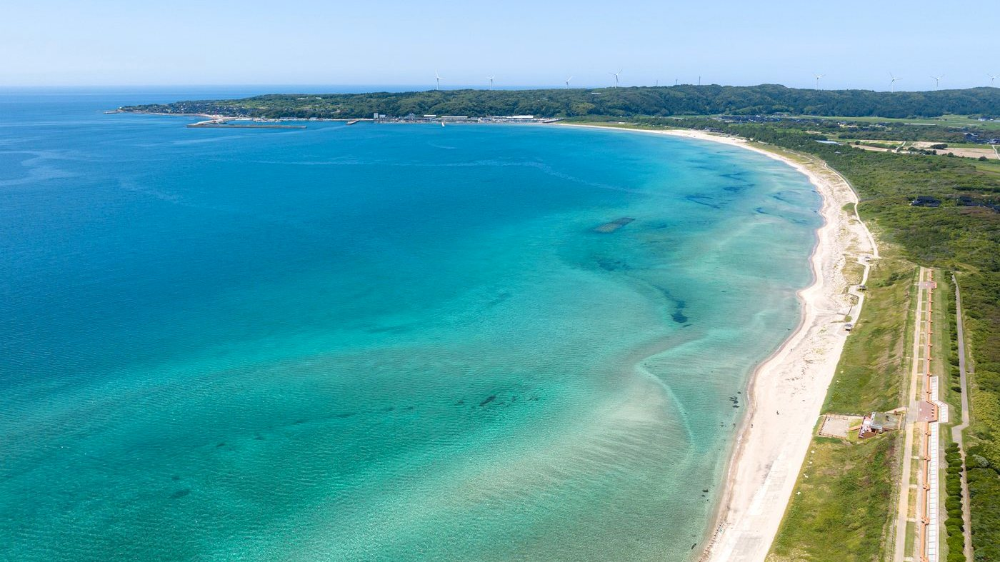

富来エリア
世界一長いベンチ・増穂浦海岸せかいいちながいべんち・ますほがうらかいがん
海・貝・夕日、そして記憶に残る長さ
増穂浦海岸に沿って続く「世界一長いベンチ」は、全長460.9m。1987年に地元住民の手で造られ、1989年にはギネスブックに世界一として掲載されました。現在は世界一の座を譲っていますが、そのスケールとロケーションは変わらず、志賀町を代表する景色です。
ベンチは海岸の高台に沿って設置され、日本海を見下ろす絶好の位置にあります。目の前には幸せを呼ぶといわれるさくら貝が打ち寄せる浜辺が広がり、夕暮れには日本海に沈む夕日が空と海を染め上げます。
砂浜は白砂青松が約4kmにわたって続き、透明度の高い海と穏やかな波から「日本の水浴場55選」にも選ばれています。11月から3月に吹く「貝寄せの風」の頃には、さくら貝をはじめ三十六歌仙貝と呼ばれる貝殻が浜辺に流れ着きます。
2023年冬に老朽化のため一時撤去されましたが、2024年5月に再設置され、地域の復興の象徴として新たなスタートを切りました。
PHOTOS
全91枚
世界一長いベンチ・増穂浦海岸の写真
代表の写真です。クリックすると拡大表示します。